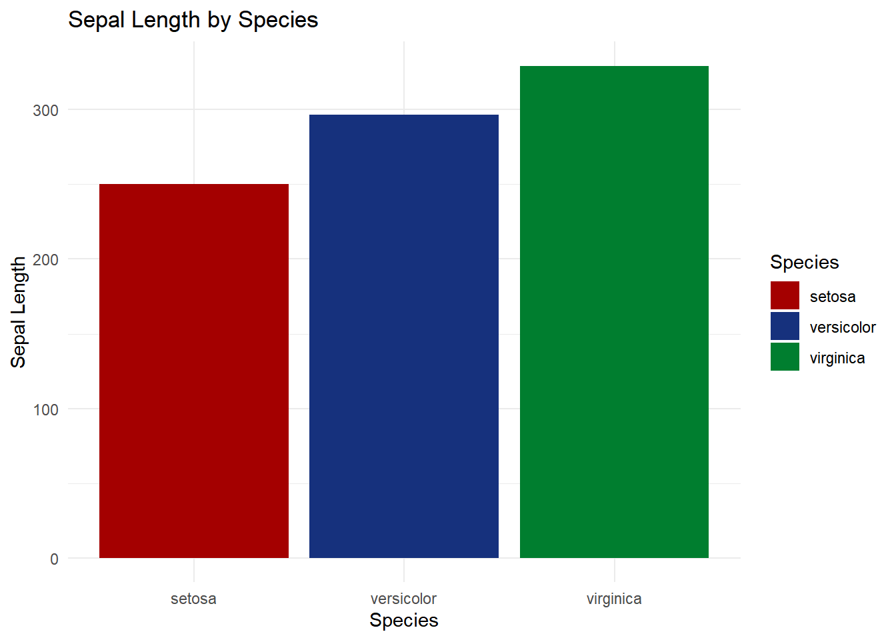

ggplot(iris, aes(x = Species, y = Sepal.Length, fill = Species)) +geom_bar(stat ="identity") +labs(title ="Sepal Length by Species", x ="Species", y ="Sepal Length") +theme_minimal()
ggplot2手动调色
ggplot(iris, aes(x = Species, y = Sepal.Length, fill = Species)) +geom_bar(stat ="identity") +labs(title ="Sepal Length by Species", x ="Species", y ="Sepal Length") +theme_minimal()+scale_fill_manual(values =c("black", "grey", "brown"))
ggplot(iris, aes(x = Species, y = Sepal.Length, fill = Species)) +geom_bar(stat ="identity") +labs(title ="Sepal Length by Species", x ="Species", y ="Sepal Length") +theme_minimal()+scale_fill_brewer(palette ="Spectral")
ggplot(iris, aes(x = Species, y = Sepal.Length, fill = Species)) +geom_bar(stat ="identity") +labs(title ="Sepal Length by Species", x ="Species", y ="Sepal Length") +theme_minimal()+scale_fill_lancet()
ggplot(iris, aes(x = Species, y = Sepal.Length, fill = Species)) +geom_bar(stat ="identity") +labs(title ="Sepal Length by Species", x ="Species", y ="Sepal Length") +theme_minimal()+scale_fill_manual(values =met.brewer("Austria"))

ggplot(iris, aes(x = Species, y = Sepal.Length, fill = Species)) +geom_bar(stat ="identity") +labs(title ="Sepal Length by Species", x ="Species", y ="Sepal Length") +theme_minimal()+scale_fill_manual(values =met.brewer("Degas"))